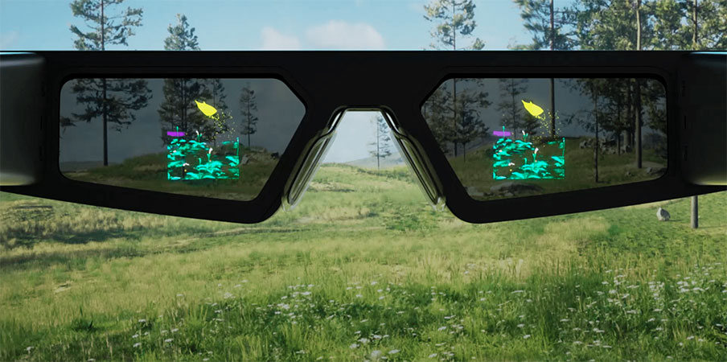

Es una implementación de información adicional a la obtenible en la realidad visual, y eso se hace por medio de elementos tecnológicos como cámaras y sensores que captan la realidad y la hacen comprensible para un ordenador. El cúal luego insertará en esta realidad información y otros elementos adicionales. Pero todo esto es realidad gracias a un algoritmo que maneja los datos y cuanto mejor sea el algoritmo más precisa es la realidad aumentada.

Son unas gafas con una pantalla que muestra información, esta información puede ser proyectada en el entorno real, siendo así una AR (Realidad aumentada).Siendo capaces de funcionar por medio de voz y gestos, facilitando así su uso. Su funcionamiento se debe a que presenta un sistema operativo y un hardware, ya que las gafas no son más que unas tabletas pequeñas que llevas en los ojos.
Las gafas AR tienen una gran variedad de aplicaciones, incluyendo: Educación: Pueden utilizarse para proporcionar información adicional y experiencias de aprendizaje interactivas. Industria: Son útiles en la formación de trabajadores, asistencia en la realización de tareas, y mantenimiento de equipos. Medicina: Los profesionales médicos pueden utilizar gafas AR en cirugías, para el entrenamiento y la visualización de datos médicos. Entretenimiento: En juegos, aplicaciones de entretenimiento y experiencias interactivas.